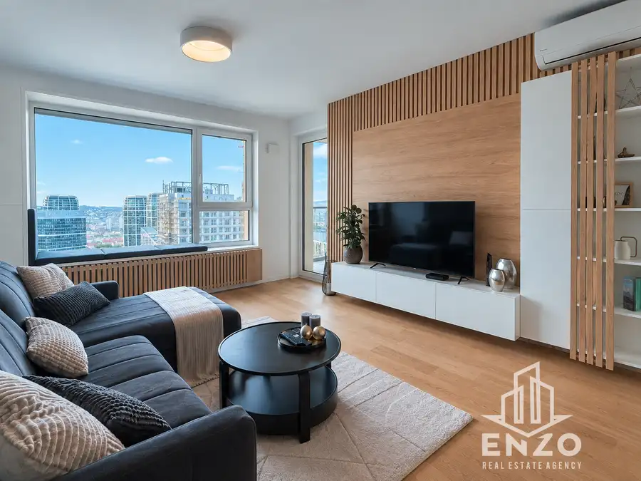
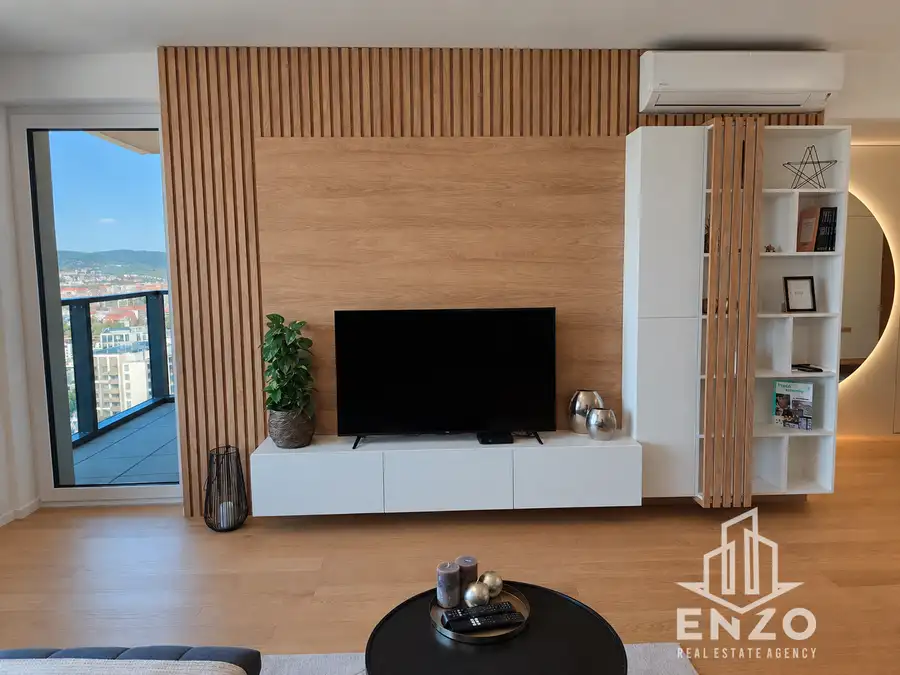
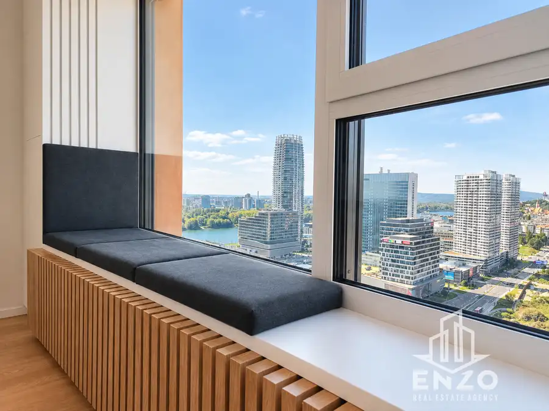
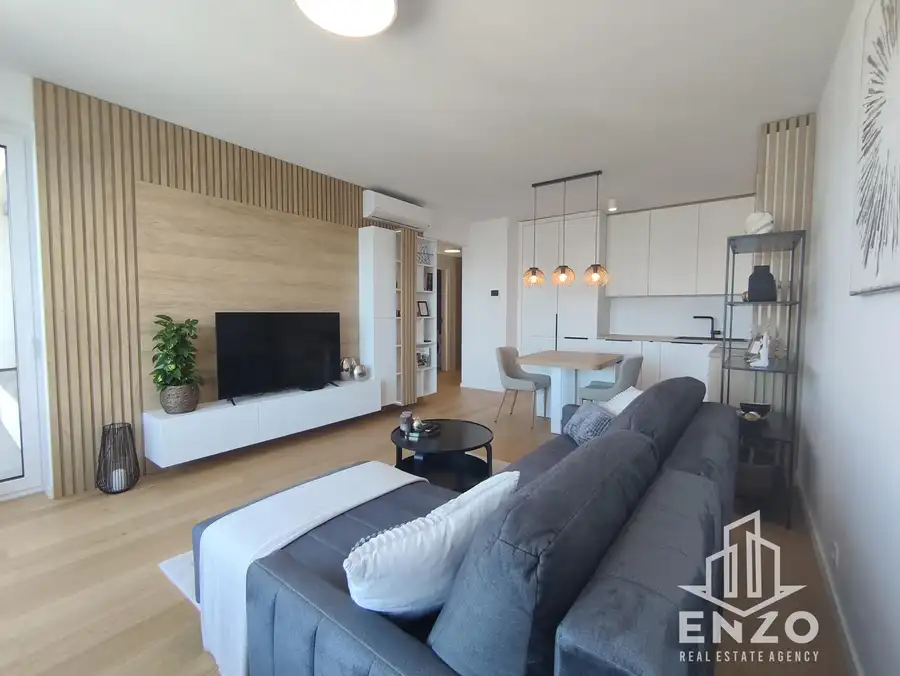
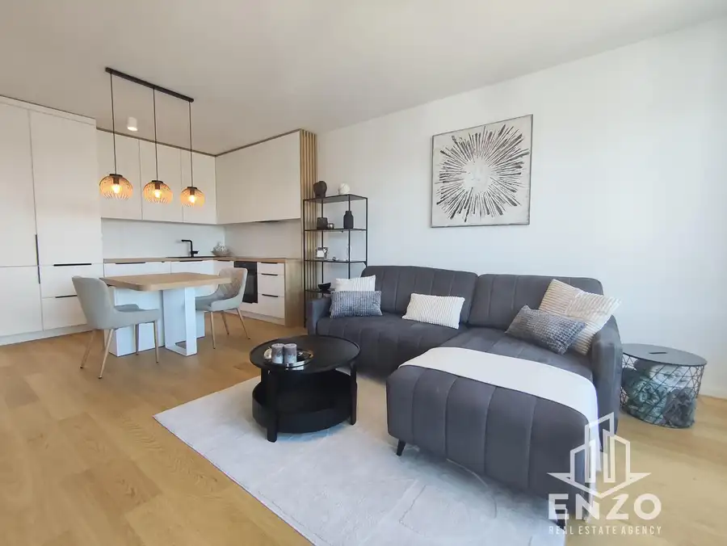
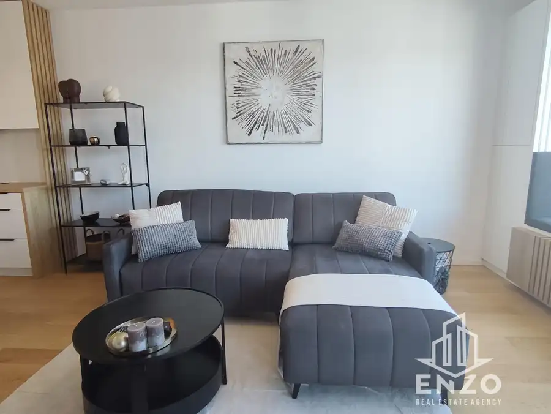
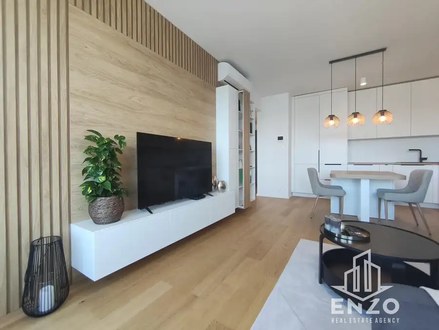
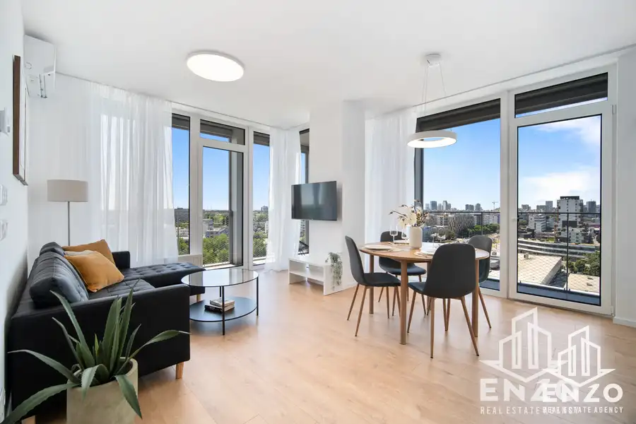
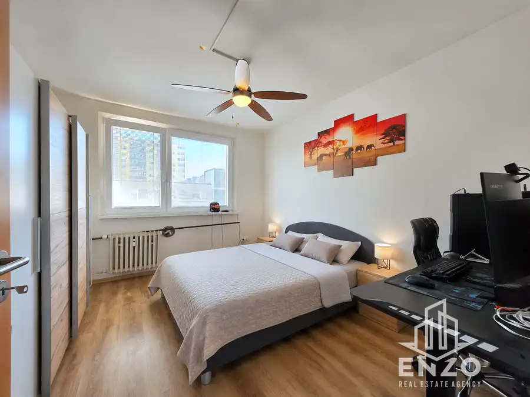
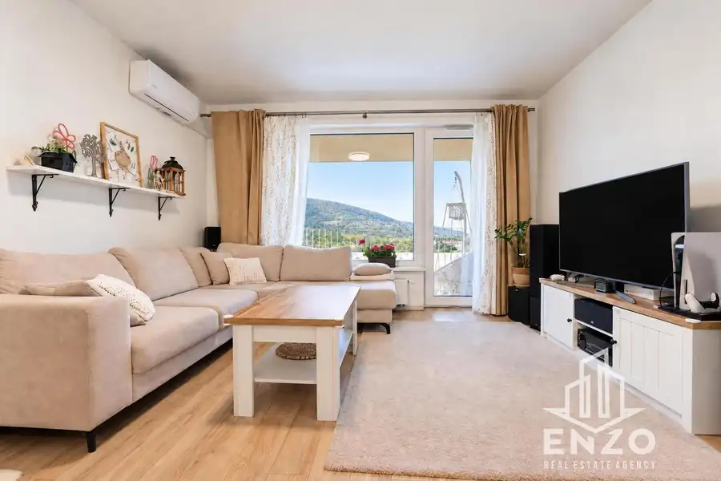

ENZO︱Bývajte dizajnovo v centre: 2-izb. byt v Klingerke
Ružinov, Bratislava







- Dispozícia2-izbový
- Plocha60.4 m²
- Poschodie26. z 35
- StavNovostavba
- VlastníctvoOsobné
- Energetická triedaA
O nehnuteľnosti
ENZO ponúka na prenájom kompletne zariadený 2-izbový byt v novostavbe Klingerka na Súkenníckej ulici vo vyhľadávanej lokalite bratislavského Downtownu.BYTCelková plocha bytu je 60,40 m2, z čoho má: byt 52,90 m2, balkón 5 m2 a pivnica 2,50 m2. Nachádza sa na 26. poschodí z 35, s viacerými výťahmi, orientovaný na západ.Byt bol navrhnutý architektom, je moderný, svetelný a okrem praktickosti, ponúka aj veľa úložného priestoru. Z bytu je nádherný výhľad ktorý si môžete vychutnávať pri kávičke z moderného a pohodlného parapetového sedenia.Byt pozostáva zo:- vstupnej chodby s odkladacím priestorom, skriňou, sedením a veľkým podsvieteným zrkadlom- obývacej izby s kuchyňou a klimatizáciou- spálne s úložným priestorom a klimatizáciou- kúpeľne s WC- balkónaPrenajíma sa plne zariadený, ako je zobrazený na fotografiách a je pripravený na okamžité nasťahovanie. Obývacia izba a spálňa majú namontované aj klimatizačné jednotky. Kuchyňa je plne vybavená a v byte sa nachádza aj TV, internet, vysávač, sušiak a pod.Byt je ideálny pre jednotlivca alebo pár. Z dôvodu charakteru a vybavenia bytu je preferovaný prenájom bez detí a domácich zvierat.Byt je dostupný ihneď.LOKALITABytový dom sa nachádza vo vyhľadávanej lokalite bratislavského Downtownu, s kompletnou občianskou vybavenosťou a detským ihriskom s outdoor workout v areáli bytového domu.CENACena: 970 €/mes. + energie 230 €/mes.K nájmu je potrebné pripočítať depozit vo výške 1 mesačného nájmu ako aj províziu pre RK vo výške jedného mesačného nájmu.Kontaktná osoba: Mgr. Adrian Poljak: 📞.: 0917 058 855, ✉️ : adrian@enzoreal.sk© Text a fotografie sú autorským dielom a majetkom realitnej kancelárie Enzo Real Estate FR+, s.r.o.
Parametre
- Cellar area
- 2.5 m²
- Cena vrátane energií
- Nie
- Druh
- 2 izbový byt
- Dátum zverejnenia
- 21. 08. 2026
- Energetická náročnosť
- Nízkoenergetický
- Energetický certifikát budovy
- A
- Energie
- 230
- Orientácia
- Západná
- Plocha balkónu v m2
- 5 m²
- Podlažie
- 26
- Počet balkónov
- 1
- Počet izieb / miestností
- 2
- Počet nadzemných podlaží
- 35
- Počet pivníc
- 1
- Rok výstavby
- 2022
- Stav nehnuteľnosti
- Novostavba
- Telekomunikácie
- Internet, Optická sieť
- Typ
- Prenájom
- Typ konštrukcie
- Železobetónová
- Umiestnenie
- Ďalšie nadzemné podlažie
- Vlastníctvo
- Osobné
- Vybavenie
- Balkón, Pivnica, Výťah
- Vykurovanie
- Ústredné
- Zariadenie
- Zariadené kompletne
- Úžitková plocha
- 60.4 m²
Kde to je


Mohlo by Vás zaujímať

BytNové 1 270 €BEZ PROVÍZIE︱3-izbový apartmán | OLIVIA Residence Nové Mesto, Bratislava 3-izbový91.72 m²11. podlažie
BytNové 214 990 €TOP CENA | 3-izbový byt s loggiou v tichej časti Dúbravky Dúbravka, Bratislava 3-izbový68.51 m²4. podlažie
BytNové 264 990 €ENZO | Investičný 2izb. byt s klimatizáciou v tichej lokalite Bory Devínska Nová Ves, Bratislava 2-izbový63.21 m²3. podlažie